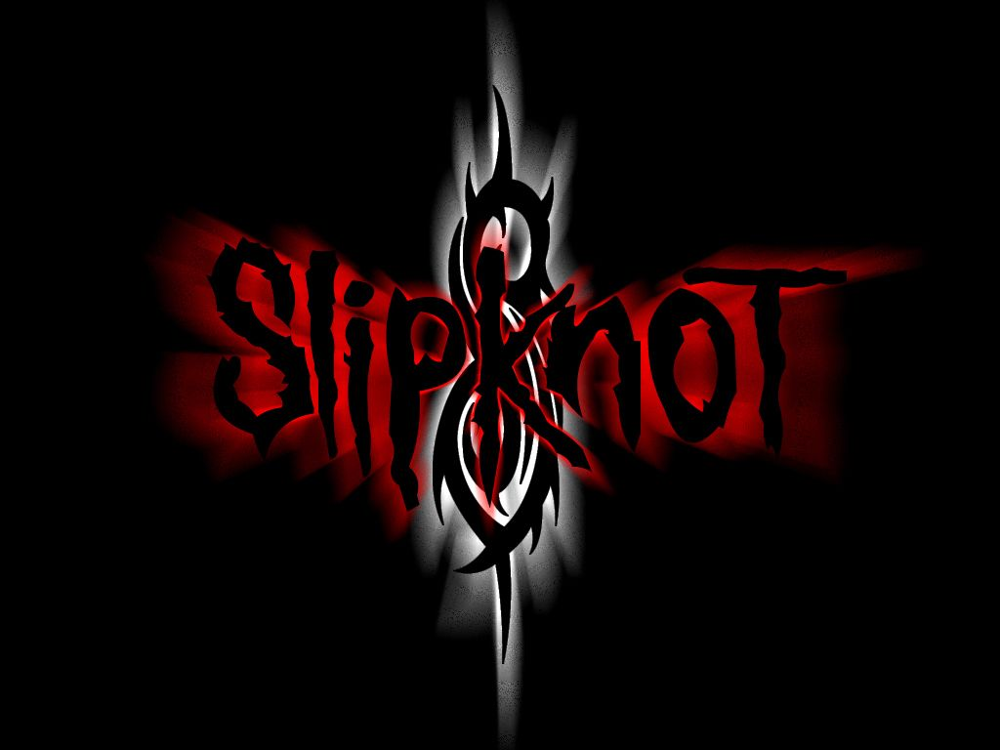

slipknot
introducción
Slipknot es una banda estadounidense de metal alternativo formada en 1995 en Des Moines, Iowa, Estados Unidos. Sus integrantes en la actualidad son Corey Taylor, Craig Jones, Jim Root, Mick Thomson, Shawn Crahan y Sid Wilson. Slipknot es conocida por las máscaras características de cada uno de sus miembros, que cambian conforme han sacado más discografía.
